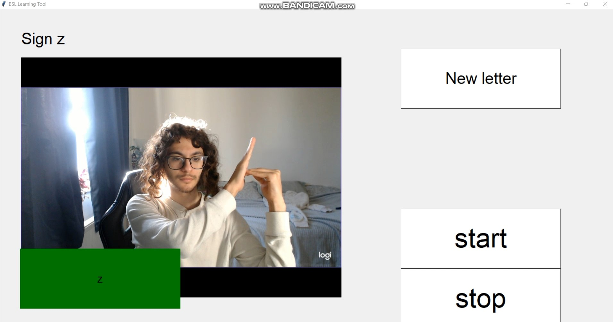
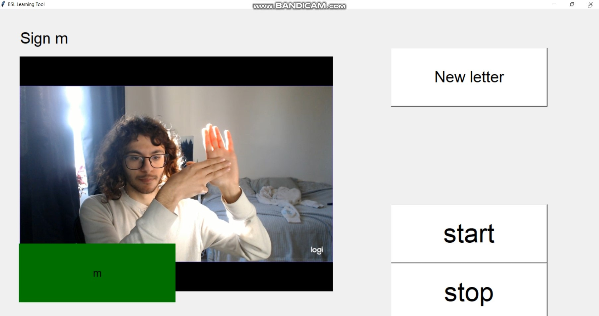
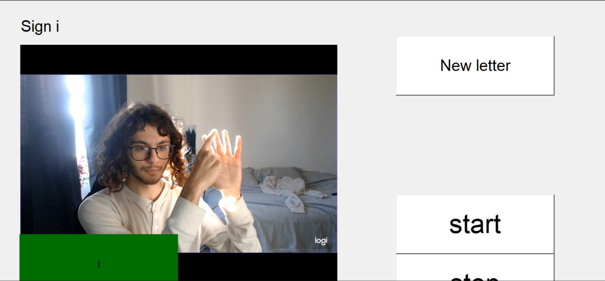

Demo for the British Sign Language Project
Video demo will be posted once the project is complete.
Use of YOLOv5 to make a letter detector that works when the user turns on the webcam by pressing "start".


